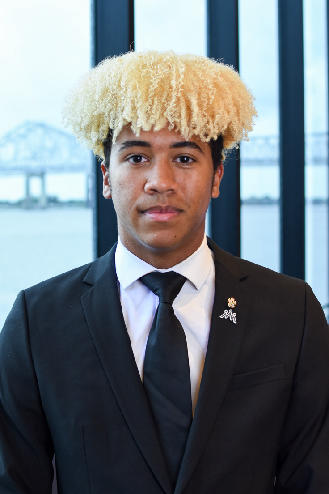

I'm a Computer Information Systems and Business Administration double major at Northwestern State University, graduating in May 2027. I'm currently an IT intern at Natchitoches Regional Medical Center (NRMC), where I'm gaining hands-on experience in the healthcare technology field. I'm interested in pursuing a career in banking or IT after graduation, combining my technical background with my business coursework. Outside of school and work, I'm an avid golfer and enjoy following sports of all kinds.
Connect with me on LinkedIn.